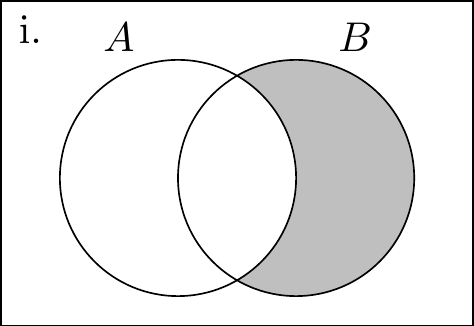
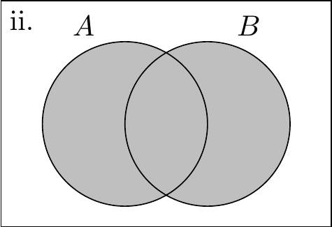
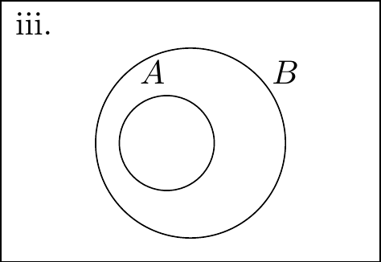
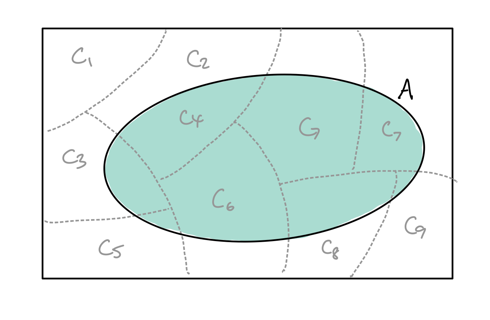
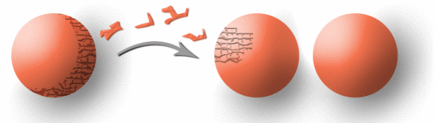

1.2 Axiomatic probability
In principle, we can understand and easily grasp the notion of probability as the “frequency of an event occurring”. But how do we operationalise this concept? That is, by what rules and mechanisms are we allowed to assign probabilities to events? If we can overcome this task and are able to assign probabilities to (random) events in an experiment, then we can start to analyse them statistically!
1.2.1 Probability as a measure
Let us take a measure-theoretic approach to defining probabilities. We will dive straight into the rigors of definitions before providing a somewhat apologetic rationale as to why such mathematical difficulties are required for probability theory.
As the name implies, measure theory is the theory about how we measure things (duh!). Measure itself is a fundamental concept in mathematics, and it would be useful to come up with a mathematical framework for how we deal with everyday concepts like length, mass, area, volume, and so on. Importantly, such a framework allow us to reliably measure in even higher dimensions or onto more abstract constructs not yet imaginable.
Intuitively, a measure is simply a function whose input is the thing we want to measure (let’s call it a set), and whose output is a non-negative number. Don’t worry, a formal definition will follow, but for now, call this function \(\mu\). It would be fair to expect a measure \(\mu\) to satisfy
- \(A \subseteq B \Rightarrow \mu(A) \leq \mu(B)\)
- \(A \subseteq B \Rightarrow \mu(B-A)= \mu(B) - \mu(A)\)
- If \(\{A_1,A_2,\dots\}\) are mutually exclusive sets (disjoint), then \(\mu\left(\cup_{i=1}^\infty A_i \right) = \sum_{i=1}^\infty \mu(A_i)\)
The first property simply says that if \(A\) is a subset of \(B\), then the measure of \(A\) is at most the measure of \(B\). The second property follows this up by saying that the measure of the set \(B-A\), that is, the set that is obtained by starting with \(B\) and taking away the parts that is contained in \(A\), then the measure of this created set is the difference between the measures of \(B\) and \(A\). Finally, the third property, also known as countable additivity, simply states that the measure of the whole is equal to the sum of the parts. It turns out that the first and second properties follow from the third (and the fact that a measure cannot be negative)–see Definition 1.2.
So we have this intuition about what the measure should be, but what about the stuff we want to measure? For our purposes, we are interested in measuring subsets of \(\Omega\). We ask, are we able to measure all possible subsets of \(\Omega\)? At a glance, perhaps if \(\Omega\) is countable (e.g. \(\Omega=\{1,2,3\}\)), it is easy to describe the subsets of \(\Omega\) through the power set7 \({\mathcal P}(\Omega)\), which is the set of all possible subsets of \(\Omega\), but what about when \(\Omega\) is uncountable (e.g. an interval \(\Omega=[0,1]\in\mathbb{R}\)). Given a sample space \(\Omega\), we need to define the largest possible collection of subsets of \(\Omega\) that can be observed and on which we can assign valid measure.
Definition 1.1 (\(\sigma\)-algebra) A collection \({\mathcal F}\) of subsets of a set \(\Omega\) is called a \(\sigma\)-algebra if it satisfies the following conditions:
- If \(A \in {\mathcal F}\), then \(A^c \in cF\) [closed under complementation].
- If \(A_1,A_2,\cdots \in {\mathcal F}\), then \(\cup_{i=1}^\infty A_i \in {\mathcal F}\) [closed under countable unions].
- \(\{\} \in {\mathcal F}\) [contains the empty set].
As a remark, condition iii. can be replaced with \(\Omega\in{\mathcal F}\) by virtue of condition i.. The \(\sigma\)-algebra is a collection of events or subsets of the sample space \(\Omega\), including \(\Omega\) itself and the empty set \(\{\}\), which is closed under countable applications of set operations. This is because DeMorgan’s Law allows us to write the countable union property in iii. also as countable intersections: If \(A_1,A_2,\cdots \in {\mathcal F}\), then by i. \(A_1^c,A_2^c,\cdots \in {\mathcal F}\), and hence \(\cup_{i=1}^\infty A_i\in{\mathcal F}\) and also its complement. By DeMorgan’s Law, \[ \left( \cup_{i=1}^\infty A_i^c \right)^c = \cap_{i=1}^\infty A_i. \]
Sets contained in \({\mathcal F}\) are called measurable sets.
The \(\sigma\)-algebra is an important condition for measure to not breakdown, because it helps draw a line as to which subsets of the sample space is measurable, and which is not. Out of interest, condition iii. in Definition 1.1 is the condition that makes \({\mathcal F}\) a \(\sigma\)-algebra (the \(\sigma\) stands for countable sum). Without this condition, one ends up with just an algebra of sets, one that is most likely too small, failing to contain sets that we would like assign a measure.
Let’s take a look at some examples of \(\sigma\)-algebras.
Example 1.5
The trivial \(\sigma\)-algebra: \[\big\{ \{\}, \Omega \big\}.\] This corresponds the case of no information.
The power set of the sample space \(\Omega\): \[\big\{ A \mid A \subseteq \Omega \big\}.\] This corresponds the case of full information.
The collection \(\big\{ \{\}, A, A^c, \Omega \big\}\) is a \(\sigma\)-algebra, for any \(A\subseteq \Omega\).
Let \(\Omega = \{a,b,c,d\}\). A possible8 \(\sigma\)-algebra is \[\big\{\{\}, \{a,b,c,d\}, \{a,b\}, \{c,d\} \big\}.\]
Define \(B(s)\) to be a square of side length \(s\). Let \(\Omega\) be the collection of points in \((0,1)\times(0,1)\subset \mathbb{R}^2\) contained within the a unit square \(B(1)\). Then \[{\mathcal F}=\{ \text{Collection of points contained in the square } B(s) \text{ with } s \in (0,1) \}.\] It should be clear there are uncountably many such squares that can be fit within the unit square.
Just as a remark, most introduction to probability measure will deal with finite or countable sets when introducing \(\sigma\)-algebras, giving readers an impression that it’s only possible to define \(\sigma\)-algebras on such sets. The fifth example above gives an example of a \(\sigma\)-algebra which is uncountable.
The twin \((\Omega,{\mathcal F})\) is called a measurable space. This sort of defines the “parts” of our problem which are measurable, as per Definition 1.1. What’s missing is a measure, i.e. the thing that actually tells us ‘how long a piece of string is’, so to speak9. We now define a measure as follows.
Definition 1.2 (Measure) A measure \(\mu\) is a non-negative real valued function defined on a \(\sigma\)-algebra, i.e. \(\mu:{\mathcal F}\to\mathbb{R}_{\geq 0}\cup\{\infty\}\), where \(\mathbb{R}_{\geq 0}\) are the non-negative real numbers and \({\mathcal F}\) a \(\sigma\)-algebra of subsets of \(\Omega\). The measure \(\mu\) satisfies the following properties:
- \(\mu(\{\})=0\).
- \(\mu\) is countably additive, i.e. if \(A_1,A_2,\dots\) are disjoint events, then \[\mu\left( \cup_{i=1}^\infty A_i \right) = \sum_{i=1}^\infty \mu(A_i).\]
If, in addition the measure of the entire sample space is normalised (i.e. \(\mu(\Omega)=1\)), then \(\mu\) is called a probability measure. We will see this in the next section.
The triplet \((\Omega,{\mathcal F},\mu)\) is called a measure space (note that without the measure it is called a measurable space). This space simply tells us the parts needed for well-defined measure to take place on the subsets of \(\Omega\).
Example 1.6
The counting measure. Let \(\Omega\) be a countable set [You may be creative as you like here to make this less abstract, e.g. the books on your shelf or the members of your family, although the set need not be finite]. Let \({\mathcal F}={\mathcal P}(\Omega)\) be the power set of \(\Omega\). For all sets \(A\in{\mathcal A}\), define \[\mu(A) = \begin{cases} |A| & A \text{ has finitely many elements}\\ \infty &\text{otherwise} \end{cases}\] where the operator \(|\cdot|\) represents the cardinality of the set, i.e. the number of elements it contains (its size).
The Lebesgue measure in one dimension. Let \(\Omega=\mathbb{R}\), and define \({\mathcal F}\) to contain all sets of the form
- [a,b], i.e. closed intervals,
- (a,b), i.e. open intervals,
- (a,b], i.e. open-closed intervals; and
- [a,b), i.e. closed-open intervals.
for all real numbers \(a\) and \(b\). We can deduce that the \(\sigma\)-algebra \({\mathcal F}\) contains all possible “nice” intervals of the real line, including unbounded intervals and even singletons, which means any continuous partition of the real line can be measured (including a point, which should have measure zero). To see this, using the properties of \(\sigma\)-algebras,
unbounded intervals are in \({\mathcal F}\), since, for instance \[(x,+\infty)=\cup_{i=1}^\infty(x,x+i).\]
singletons are in \({\mathcal F}\), since \[\{x\}=\cap_{i=1}^\infty (x-1/i,x+1/i).\]
This set \({\mathcal F}\) has a special name, called the Borel \(\sigma\)-algebra.
All that’s left is to define the measure. The Lebesgue measure \(\mu\) assigns the usual concept of length to any continuous interval on \(\mathbb{R}\) (to be precise, the Borel \(\sigma\)-algebra on \(\mathbb{R}\)): \[\mu\left(A\right)=b-a\] where \(A\) is any interval of \(\mathbb{R}\) of the above forms (closed, open, open-closed, closed-open). This measure works even for singleton sets or unbounded intervals.
1.2.2 Axioms of probability
In the previous section, we defined a measure space as the triplet \((\Omega,{\mathcal F},\mu)\). This formulation lets us work on the set of interest \(\Omega\), and defines the possible measurable subsets \({\mathcal F}\subseteq \Omega\), as well as the measuring device \(\mu\). This framework generalises the intutive notions of length, area, and volume to higher dimensions and more abstract notions.
In probability theory, we are interested in making use of measure theory to assign probabilities to events. So again in the context of conducting an “experiment”,
- The sample space \(\Omega\) is the set of possible outcomes \(\{\omega_1,\omega_2,\dots\}\) of the experiment.
- The \(\sigma\)-algebra \({\mathcal F}\subseteq\Omega\) would define the set of possible outcomes that are measurable, and are able to be assigned probabilities. \({\mathcal F}\) is known as the event space.
All that’s left is to define a probability measure on the measurable space \((\Omega,{\mathcal F})\).
Definition 1.3 (Axioms of Probability) Given a measurable space \((\Omega,{\mathcal F})\), a probability measure (or probability function) is a function \(\mathbb{P}:{\mathcal F}\to[0,1]\) that satisfies the following three conditions:
- \(\mathbb{P}(E) \geq 0, \forall E \in {\mathcal F}\).
- \(\mathbb{P}(\Omega) = 1\).
- For pairwise disjoint events \(A_1,A_2,\dots\), \[\mathbb{P}\bigg( \bigcup_{i=1}^\infty A_i \bigg) = \sum_{i=1}^\infty A_i.\]
These three conditions are commonly known as the Axioms of Probability, or Kolmogorov Axioms.
This is pretty much similar to the definition of the measure \(\mu\) for a measure space, except for the unitarity requirement \(\mathbb{P}(\Omega)=1\). The first and second condition implicitly states that probabilities are always finite, by the results of Theorem 1.1 below. In contrast, measure theory allows for infinite measure.
The second condition above states that the probability of at least one of the elementary events in the entire space will definitely occur. One common misunderstanding here is to read the statement as “the probability of all of possible events occurring is 1”, which is a rarer thing in most situations.
As a remark, the above axioms does not tell us anything about what the functional form of \(\mathbb{P}\) actually is. It is pretty abstract, but the good thing is that any such function that satisfies the above three axioms is by definition a probability function. At this point, there is still no notion of randomness in play. All we are doing is providing the building blocks to be able to assign a numerical representation of (un)certainty of some particular event happening.

Figure 1.1: Andrey Nikolaevich Kolmogorov 25 April 1903–20 October 1987. Widely considered to be the father of probability theory.
As mentioned, any function abstract or concrete satisfying the Probability Axioms is regarded as a probability function. But what does the probability number represent, and what does it actually mean? Broadly speaking, there are two main interpretation of probabilities.
The frequentist interpretation is one that relies on “long run” frequencies. A probability of heads being 50% in a coin flip is interpreted to mean the following: If we flip the coin many times, then the proportion of heads that is observed will be 50% in the long run.
The subjectivist or Bayesian interpretation is that the probability measures an observer’s strength of belief that the event is true. Put a different way, it is the measure of ignorance on the observers part on what has happened. When a coin is flipped, it has landed either heads or tails, and this much is certain. What is uncertain is my knowledge about the coin, rather than the outcome of the coin itself. Setting a 50% probability for heads occuring implies that I am willing to bet at a 1:1 odds that the coin landed heads.
Example 1.7 (C\&B 1.2.5) Consider the simple experiment of tossing a coin. Define the sample space to be \(\Omega=\{H,T\}\), as representing the only two possible outcomes \(H=\) heads or \(T=\) tails.
What is the probability of heads occurring? The Axioms of Probability does not help us in this regard! (I mean, it does not give us a functional form for the probabilities)
Perhaps a function that assigns equal probability to either event would be a good place to start, so we require \[\begin{equation} \mathbb{P}(\{H\})=\mathbb{P}(\{T\}). \tag{1.1} \end{equation}\] At this point, we still don’t know their values–the probabilities could be 0.1, 0.2, 0.3, or any other value. Or could they?
Since \(\Omega = \{H\} \cup \{T\}\), we know that by the Probability Axioms that \[\begin{align} 1 = \mathbb{P}(\Omega) &= \mathbb{P}\left( \{H\} \cup \{T\} \right) \nonumber \\ &= \mathbb{P}(\{H\}) + \mathbb{P}(\{T\}) \tag{1.2} \end{align}\] so the only possible value that satisfies both (1.1) and (1.2) is \[ \mathbb{P}(\{H\})=\mathbb{P}(\{T\}) = 0.5. \]
Of course, without the restriction of equal probability in (1.1), then any two numbers satisfying (1.2) and the Probability Axioms would be valid, e.g. \(\mathbb{P}(\{H\})= 0.8\) and \(\mathbb{P}(\{T\}) = 0.2.\)
Example 1.8 Two six-sided dice are thrown and the outcome for both dice are recorded.
As there are 36 possible outcomes, the sample space is \[ \Omega = \big\{ \omega_{ij}=\{i,j\} \mid i,j =1,\dots,6 \big\} \]
Suppose we are interested in the event \(E\) defined to be ‘the sum of the two scores is 6’. These would be the events \[ E := \big\{ \{1,5\}, \{2,4\}, \{3,3\}, \{4,2\}, \{5,1\} \big\}. \] One may easily construct a \(\sigma\)-algebra \({\mathcal F}\) (for example, the power set of \(\Omega\)) and verify that the event \(E\) is contained within it. So this is a measurable event.
So at this point, we might be thinking about a suitable probability function so that we may assign a probability to the event \(E\). Especially if the two dice are fair, it seems reasonable to assume that any of the outcome in \(\omega_{ij}\in\Omega\) is equally likely to occur, so we set \(\mathbb{P}(\omega_{ij}) = 1/36\) for any \(i,j =1,\dots,6\). In particular, the probability of any event should be proportional to the total number of outcomes in \(\Omega\). As a quick exercise, you may check that such a probability function satisfies all the Kolmogorov Axioms.
\[\begin{align*} \mathbb{P}(E) &= \mathbb{P}\left( \{1,5\} \cup \{2,4\} \cup \{3,3\} \cup \{4,2\} \cup \{5,1\} \right) \\ &= \mathbb{P}( \{1,5\}) + \mathbb{P}(\{2,4\}) + \mathbb{P}(\{3,3\}) \\ & \hspace{1em} + \mathbb{P}(\{4,2\}) + \mathbb{P}(\{5,1\}) \\ &= \frac{5}{36} \end{align*}\]
Alternatively, we could have also easily argued that \[ \mathbb{P}(E) = \frac{|E|}{|\Omega|} = \frac{5}{36}. \]
As a remark, it would be very cumbersome to have to check the Kolmogorov Axioms every time we encounter a probability function. For problems like the above, we won’t run into any technical issues because the sample space is finite and/or countable10. In general, most of the problems we will come across will satisfy the axioms automatically, especially with “nice” sample space and events, so we usually don’t check axioms all the time.
At this point, most textbooks go into a section about counting, namely using methods like combinations and permutations. I’m sure you’ve encountered this previously in your statistics classes, and appreciate how useful they are when trying to calculate probabilities as being “the number of outcomes in the event space” divided by “the number of outcomes in the sample space”. However, our focus for this course is to get to the inference section, and the topic of counting does not contribute much to that understanding, so I shall skip it.
1.2.3 Derived probability results
Let us now look at some useful probability results that can be derived from the probability axioms.
Theorem 1.1 Let \((\Omega,{\mathcal F},\mathbb{P})\) be a probability space. For any \(E\in{\mathcal F}\),
- \(\mathbb{P}(\{\}) = 0\);
- \(\mathbb{P}(E) \leq 1\); and
- \(\mathbb{P}(E^c)=1-\mathbb{P}(E).\)
An important thing that we learn here is that probabilities are always finite and bounded within \([0,1]\), i.e. for any event \(E\), \(0 \leq \mathbb{P}(E) \leq 1\). So please, do not make the mistake of reporting negative probabilities or probabilities greater than one–they are mathematically impossible11!
The proof of Theorem 1.1 is left an exercise. Try this out for yourself!
Further results regarding two events in the sample space based on the Probability Axioms:
Theorem 1.2 Let \((\Omega,{\mathcal F},\mathbb{P})\) be a probability space. For any \(A,B \in{\mathcal F}\),
- \(\mathbb{P}(B \cap A^c) = \mathbb{P}(B) - \mathbb{P}(A\cap B)\);
- \(\mathbb{P}(A \cup B) = \mathbb{P}(A) + \mathbb{P}(B) - \mathbb{P}(A \cap B)\); and
- If \(A \subseteq B\), then \(\mathbb{P}(A) \leq \mathbb{P}(B)\).
While these results are not so self-evident from the Probability Axioms, it may be useful to employ Venn diagrams to visualise the above statements.
  
Proof.
Note that \(B\) is composed of the two disjoint sets \(B= \{B\cap A\} \cup \{ B \cap A^c\}\), so we have \[\mathbb{P}(B) = \mathbb{P}(B\cap A) + \mathbb{P}(B \cap A^c),\] and the desired results is obtained after rearranging.
Using the identity \[A \cup B = (A \cup B) \cap \overbrace{(A \cup A^c)}^\Omega=A \cup \{B \cap A^c \},\] we have that (since the two events are disjoint) \[\begin{align*} \mathbb{P}(A \cup B) &= \mathbb{P}(A) + \mathbb{P}(B \cap A^c) \\ &= \mathbb{P}(A) + \mathbb{P}(B \cap A^c) \\ &= \mathbb{P}(A) + \mathbb{P}(B) - \mathbb{P}(B\cap A). \end{align*}\]
Since \(A \subseteq B\), \(A \cap B = A\), using i. we get \[0 \leq \mathbb{P}(B \cap A^c) = \mathbb{P}(B) - \overbrace{\mathbb{P}(A\cap B)}^{\mathbb{P}(A)},\] thus obtaining the desired result.
Theorem 1.3 (Law of Total Probability) Let \((\Omega,{\mathcal F},\mathbb{P})\) be a probability space. Let \(A\in{\mathcal F}\) and consider a (countably infinite) partition of the sample space \(C_1,C_2,\dots\) such that \(C_i\cap C_j = \{\}\) for any \(i,j\) and \(\bigcup_{i=1}^\infty C_i = \Omega\). Then \[ \mathbb{P}(A) = \sum_{i=1}^\infty \mathbb{P}(A \cap C_i). \]
We may visualise the partitions of the sample space \(C_i\) as well as the event \(A\) of interest as follows:

Of course, we can only show a finite number of partitions for illustration, but this works for infinitely many countable partitions as well. We can see that the set \(A\) is simply made up of the intersections of \(A\) and the partitions. Some of these intersections will be empty, but that’s OK.
Proof. Write \[ A = A \cap \Omega = A \cap \left(\bigcup_{i=1}^\infty C_i\right) = \bigcup_{i=1}^\infty(A \cap C_i) \] Evidently the events in the union on the right hand side of the equality are disjoint, since \(C_i\) themselves are disjoint. Therefore, \[\begin{align*} \mathbb{P}(A) &= \mathbb{P}\left(\bigcup_{i=1}^\infty(A \cap C_i) \right) \\ &= \sum_{i=1}^\infty \mathbb{P}(A \cap C_i) \end{align*}\] as required.
1.2.4 Why measure theory?
You may treat this section as optional, but it would deepen your understanding of probability theory.
Consider the uniform distribution on a random variable \(X\) on the unit interval, denoted \(X\sim\mathop{\mathrm{Unif}}(0,1)\). You may have come across this before, and know that the probability that \(X\) lies in any interval contained in \([0,1]\) is simply the length of the interval, i.e. \[\begin{equation} \mathbb{P}\big([a,b]\big) = \mathbb{P}\big([a,b)\big) = \mathbb{P}\big((a,b]\big) = \mathbb{P}\big((a,b)\big) = b-a, \tag{1.3} \end{equation}\] for \(0 \leq a \leq b \leq 1\). This definition works fine for the degenerate case \(\mathbb{P}(\{a\})=0\) for the singleton set \(\{a|a\in(0,1)\}\). In general, if \(A\) and \(B\) are disjoint subsets of \([0,1]\) then \[\begin{equation} \mathbb{P}(A \cup B) = \mathbb{P}(A) + \mathbb{P}(B), \end{equation}\] and we can even extend this notion to that of countable additivity \[\begin{equation} \mathbb{P}\left( \cup_{i=1}^\infty A_i \right) = \sum_{i=1}^\infty \mathbb{P}(A_i), \tag{1.4} \end{equation}\] for disjoint sets \(\{A_1,A_2,\dots\}\)12.
For a uniform measure on \([0,1]\), one expects that the measure of some subset \(A \subseteq [0,1]\) to be unaffected by “shifting” (with wrap-around) of that subset by some fixed amount \(r\in[0,1]\). Define the \(r\)-shift of \(A\subseteq [0,1]\) by \[ A \oplus r := \left\{ a + r \mid a \in A, a+r \leq 1 \right\} \cup \left\{ a + r - 1 \mid a \in A, a+r > 1 \right\}. \] Then we should have \[\begin{equation} \mathbb{P}(A \oplus r) = \mathbb{P}(A). \tag{1.5} \end{equation}\]
Figure 1.2: An interval in [0,1] shifted by some fixed amount, with wrap-around, should have consistent length.
At this point you might notice that all of this resonates with the previous example on the Lebesgue measure, except perhaps the shifting part, and indeed that is the case. Suppose that we dispense with measure theory and do not define things like the \(\sigma\)-algebra on the \([0,1]\) or the triplet \((\Omega,{\mathcal F},\mathbb{P})\), and only use the above probability definitions given in (1.3), (1.4), and (1.5). How far can we push the boundaries of such probability definitions before things start to breakdown?
Consider these questions:
- What is the probability that \(X\) is rational?
- What is the probability that \(X^n\) is rational for some positive integer \(n\)?
- What is the probability that \(X\) is algebraic13?
All seemingly fair and interesting questions, but are they well defined? Can we actually measure them and assign probabilities to such events? Taking a step back further, we ask:
Are all possible subsets \(A\subseteq [0,1]\) measurable? Does \(\mathbb{P}(A)\) even make sense for any event \(A\) we can think of?
It turns out the answer is no, and can be proven by contradiction with the help of equivalence relations. This shows the need for the heavy machinery that is measure theory for assigning probabilities to events14.
Proposition 1.1 There does not exist a definition of \(\mathbb{P}(A)\), defined for all subsets \(A\subseteq[0,1]\), satisfying (1.3), (1.4), and (1.5).
Proof. All we need to show is the existence of one such subset of \([0,1]\) whose measure is undefined. The set we are about to construct is called the Vitali set15, after Giuseppe Vitali who described it in 1905.
Define an equivalence relation on \([0,1]\) by the following: \[x\sim y \Rightarrow y-x \in \mathbb{Q}\] That is, two real numbers \(x\) and \(y\) are deemed to be the same if their difference is a rational number. We would like to separate all the real numbers \(x\in[0,1]\) by this equivalence relation, and collect them into groups called equivalence classes, denoted by \([x]\). Here, \([x]\) is the set \(\{y \in [0,1] \mid x \sim y\}.\) For instance,
The equivalence class of \(0\) is the set of real numbers \(x\) such that \(x \sim 0\), i.e. \([0] = \{y \in [0,1] \mid y-0\in\mathbb{Q}\}\), which is the set of all rational numbers in \([0,1]\).
The equivalence class of an irrational number \(z_1\in[0,1]\) is clearly not in \([0]\), thus would represent a different equivalent class \([z_1]=\{y \in [0,1] \mid y-z_1 \in \mathbb{Q}\}\).
Yet another irrational number \(z_2\not\in [z_1]\) would exist, i.e. a number \(z_2\in[0,1]\) such that \(z_2-z_1 \not\in\mathbb{Q}\), and thus would represent another equivalence class \([z_2]\).
And so on… The equivalence classes may be represented by \([0],[z_1],[z_2],\dots\) where \(z_i\) are all irrational numbers that differ by an irrational number, and there are uncountably many such numbers and therefore classes.
Construct the Vitali set \(V\) as follows: Take precisely one element from each equivalent class, and put it in \(V\). As a remark, such a \(V\) must surely exist by the Axiom of Choice16.
Consider now the union of shifted Vitali sets by some rational value \(r\in[0,1]\), \[ \bigcup_{r} (V \oplus r) \] As a reminder, the set of rational numbers is countably infinite17. We make a few observations:
The equivalence relation partitions the interval \([0,1]\) into a disjoint union of equivalence classes. In other words, the sets \((V \oplus r)\) and \((V \oplus s)\) are disjoint for any rationals \(r\neq s\), such that \(r,s\in[0,1]\). If they were not disjoint, this would mean that there exists some \(x,y\in[0,1]\) with \(x+r\in(V \oplus r)\) and \(y+s\in (V \oplus s)\) such that \(x+r=y+s\). But then this means that \(x-y=s-r\in\mathbb{Q}\) so \(x\) and \(y\) are in the same equivalent class, and this is a contradiction.
Every point in \([0,1]\) is contained in the union \(\bigcup_{r} (V \oplus r)\). To see this, fix a point \(x\) in \([0,1]\). Note that this point belongs to some equivalent class of \(x\), and in this equivalence class there exists some point \(\alpha\) which belongs to \(V\) as well by construction. Hence, \(\alpha \sim x\), and thus \(x-\alpha=r\in\mathbb{Q}\), implying that \(x\) is a point in the Vitali set \(V\) shifted by \(r\). Therefore, \[[0,1] \subseteq \bigcup_{r} (V \oplus r).\] and we may write \[1 = \mathbb{P}([0,1]) \leq \mathbb{P}\left(\bigcup_{r} (V \oplus r)\right),\] since the measure of any set contained in another must have smaller or equal measure. This relation is in fact implied by (1.4). Let \(A\) and \(B\) be such that \(A \subseteq B\). Then we may write \(B = A \cup (B-A)\) where the sets \(A\) and \(B-A\) are disjoint. Hence, \(\mathbb{P}(B)=\mathbb{P}(A)+\mathbb{P}(B-A)\), and since measures are non-negative and in particular \(\mathbb{P}(B-A)\in[0,1]\), we have that \(\mathbb{P}(B)\geq \mathbb{P}(A)\). However since the probability measure cannot be greater than 1, it must be equal to 1.
The disjoint union \(\bigcup_{r} (V \oplus r)\) has probability measure (according to our definitions in (1.3), (1.4), and (1.5)) \[\begin{align*} \mathbb{P}\left(\bigcup_{r} (V \oplus r)\right) &= \sum_r \mathbb{P}(V \oplus r) \\ &= \sum_r \mathbb{P}(V) \end{align*}\]
Putting these three observations together gives us \[ 1 = \mathbb{P}\left(\bigcup_{r} (V \oplus r)\right) = \sum_r \mathbb{P}(V). \] This leads to the desired contradiction: A countably infinite sum of the same quantity repeated can only equal 0, \(+\infty\), or \(-\infty\), but it can never equal 1.
In summary,
- Not all subsets of uncountable sets are measurable. Admitting all subsets of uncountable sets will break mathematics.
- \(\sigma\)-algebras are the patch that fixes mathematics. It gatekeeps the subsets of uncountable sets and disregards those which are not measurable.
- Actually, if you have been following along, you might realise that we are at risk of breaking mathematics when dealing with uncountable sets. Strictly speaking, we only need \(\sigma\)-algebras when working in a set with uncountable cardinality.
Finally, what on earth is an “unmeasurable” set? Wouldn’t it be (even arbitrarily) possible to just define a measure for whatever set we can think of? If the above example hasn’t convinced you enough, some other mathematicians have tried to resolve this but it seems it is not possible to do so without encountering paradoxes, such as the one below.
The Banach–Tarski paradox states that a ball in the ordinary Euclidean space can be doubled using only the operations of partitioning into subsets, replacing a set with a congruent set, and reassembly.

To be clear, no rule of mathematics are broken in the Banach-Tarski paradox, but the result defies intuition. Another statement of this paradox is that we can chop up a pea into finitely many pieces and reassemble it into the sun (pea-sun paradox). If we don’t lay out the foundations for measuring probabilities rigorously, we can end up with nonsensical answers!
This section was highly inspired by the following references:
- Rosenthal, J. (2006). A first look at rigorous probability.
- The discussion here: https://stats.stackexchange.com/q/199280
- This YouTube video on Vitali Sets: https://youtu.be/ameugr-wjeI
For the example at hand, the power set is \({\mathcal P}(\Omega)=\{ \{\}, \{1\}, \{2\}, \{3\}, \{1,2\}, \{1,3\}, \{2,3\}, \{1,2,3\} \}\)↩︎
You may notice that other \(\sigma\)-algebras are indeed possible, e.g. the power set of \(\Omega\) in this case. There is a notion of the smallest \(\sigma\)-algebra containing the collection of “basic events”. Luckily for us, the event space that we will usually be working with will be the smallest \(\sigma\)-algebra without much technicalities, so we shall not explore this concept any further.↩︎
https://idioms.thefreedictionary.com/How+long+is+a+piece+of+string%3F↩︎
See Theorem 1.2.6 in C&B.↩︎
At least within the framework of the Kolmogorov Axioms. See: https://en.wikipedia.org/wiki/Negative_probability↩︎
A concrete example of this is for the sets \(A_1=(0,1/2)\), \(A_2=(1/2, 3/4)\), \(A_3=(3/4,7/8)\), and so on (adding half the interval at each iteration). One finds that the measure of the countable union is \(\sum_{i=1}^\infty (1/2)^i=1\).↩︎
An algebraic number is a number that is a root of a non-zero polynomial in one variable with integer coefficients.↩︎
Or at least, for cases where “not so nice” events need to be measured.↩︎
Given a collection of non-empty sets, it is always possible to construct a new set by taking one element from each set in the original collection. See https://brilliant.org/wiki/axiom-of-choice/↩︎
https://www.homeschoolmath.net/teaching/rational-numbers-countable.php↩︎